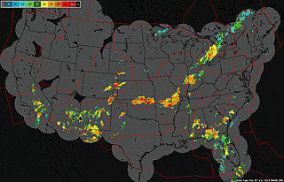
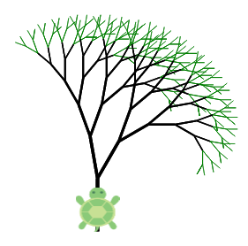
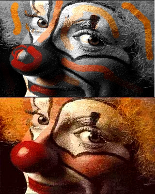
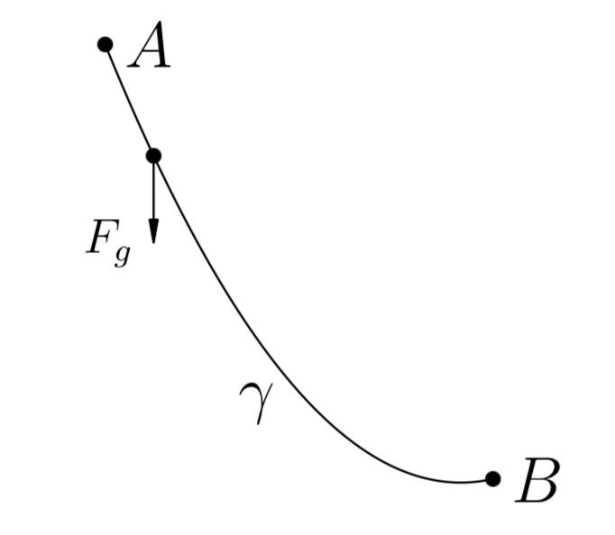
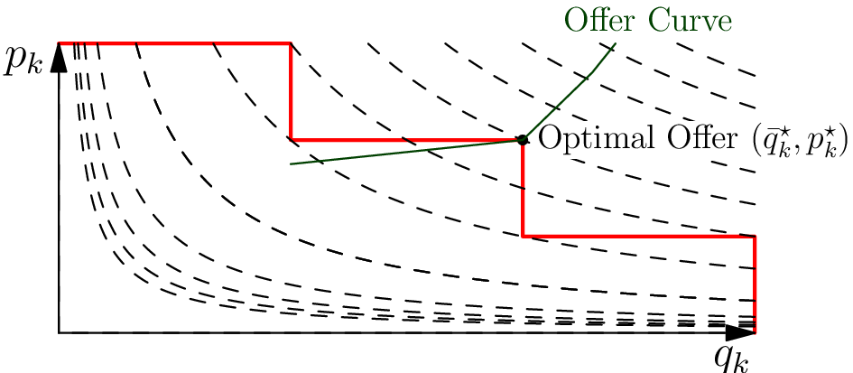
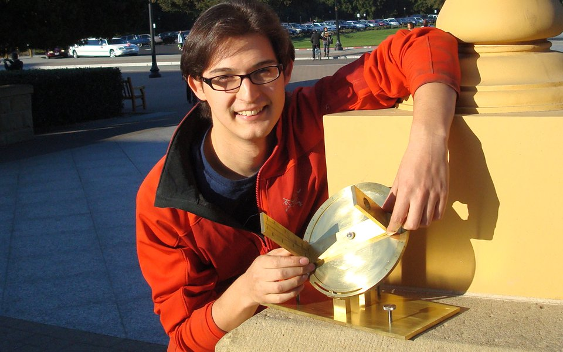
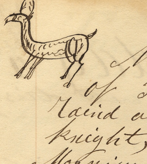
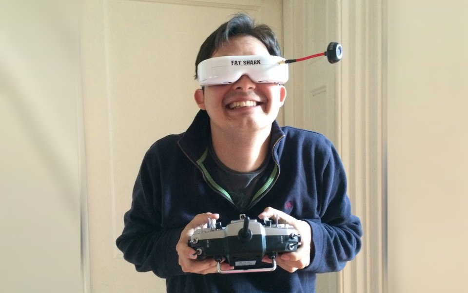
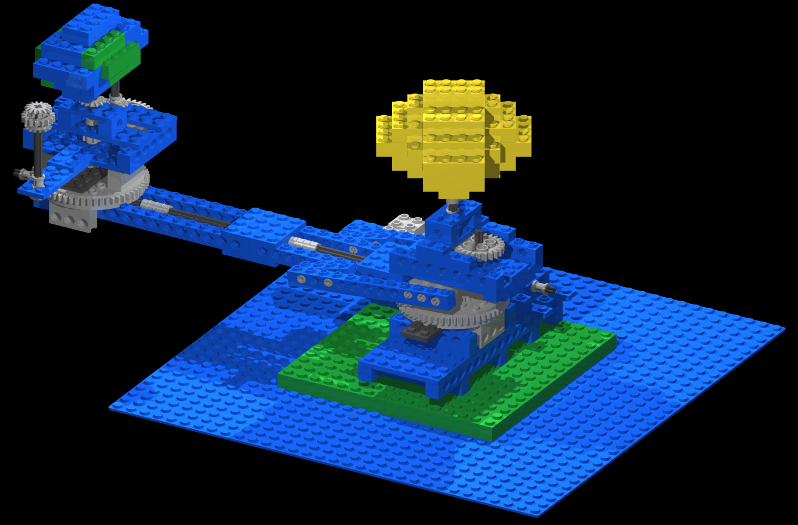

About Me
I'm a mathematician, computer scientist, and an engineer.
My background is in linear algebra and mathematical optimization. I love optimization because most business and engineering problems are easily expressed as optimization models, and these models can be solved with powerful algorithms.
I currently lead the cuOpt solver team at NVIDIA, working on GPU-accelerated optimization. Before that, I spent five years at Apple, first building real-time optimization solvers for autonomous systems and then as an engineering manager leading a trajectory optimization and ML prediction team. Earlier, at Gurobi Optimization, I worked on barrier and crossover, MIP heuristics, and developed the automatic tuning tool and the Gurobi Instant Cloud.
Selected Writing
- Batched First-Order Methods for Parallel LP Solving in MIP Honorable mention, 2026 Harvey J. Greenberg Research Award, INFORMS Computing Society
- Solve Linear Programs Using the GPU-Accelerated Barrier Method in NVIDIA cuOpt
Projects
Below are some projects I've worked on. Many of them are fun, some are a bit more serious, all are technical.

Routing planes around thunderstorms: During my postdoc I implemented an optimization model of the National Airspace System that included: nearly 4000 flights, all high-altitude traffic sectors, and the 34 largest airports.
I used the model to analyze a day when many flights exprienced delays due to weather and air traffic.

Logo Interpreter: An interpreter for the Logo language. The interpreter is written in OCaml and compiled to Javascript, so you can run Logo in your browser.

Colorization on GPUs: I implemented a method to color a grayscale image from a small set of color annotations. The method is based on a parallel implementation of preconditioned conjugate gradient in CUDA.
I used this method to solve two linear systems, each with 3 million unknowns, on two GPUs. The solutions produced a coloring of a 1050 x 3360 image of El Capitan and the lower Yosemite valley.
Low-polygon 3D model of my head: For Halloween in 2011, Jim Paris and I wrote some custom software to create a low-polygon model of our heads from a series of still photos.
We printed and assembled the models and used them for Halloween masks.

Brachistochrone: I used optimization to compute solutions to the famous brachistochrone problem.
I used Chebyshev spectral collocation to approximate the optimal-control problem. The resulting nonlinear optimization problem has linear-inequality constraints. To solve it, I developed my own quasi-newton solver with a primal-dual interior-point method for the QP subproblems.

Optimal Bidding in Power Markets: As a research assistant at EPRI, I analyzed the effects of optimal bidding in a simple power market when a vertically-integrated firm (controlling generation, demand, and electrical transmission) seeks to maximize profits.

Heliochronometer: A sundial that tells standard mean time by computing a correction from local real time via a mechanical computer.
The heliochronometer, which I built for Stanford's Design and Manufacturing class, is based on the design of a 1906 brass Pilkington and Gibbs heliochronometer.

Interactive Oregon Trail Diary: In April of 1852, my ancestor, Philemon Morris, set out on the Oregon Trail. He kept a detailed account of his trip west, and his first two winters in Oregon, in a small diary.
I wrote a small web app that matches each entry in the diary to my best guess at his location along the trail.
Astrophotography: I recently started taking pictures with a Seestar S50 Pro telescope on my roof. It's amazing to see nebulas and galaxies from my light-polluted house.

Droning: I'm a big drone enthusiast. I made a few videos you might enjoy watching:
- In Massachusetts: Hingham and Hull through the eyes of an Inspire 1
- Castle Hill by Drone - The Crane estate in Ipswich, MA
- Flying the Phantom around the North Shore

Lego Orrery: An Orrery is a mechanical model of the solar system. My orrery depicts the motion of the Earth-Moon-Sun system. Four independent rotations are powered by the rotation of a single axel powered by a Lego 71427 motor.